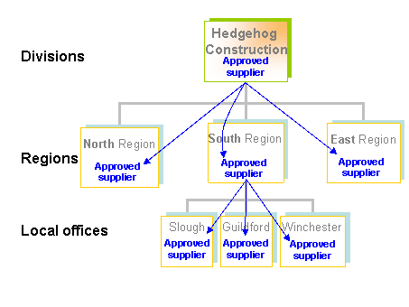
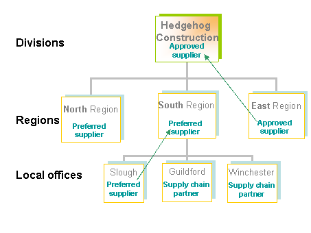

One of the key decisions when implementing SRM is the level at which you want to set the status code.
If your business manages your supply chain centrally, you can assign status codes to a
You will then also be able to assign a status code to the
For example, the codes could be set at division level, to set the relationship with the
Division level relationship with "Southern Brick Supplies"

The relationship is determined by the division, so all lower levels in the organ
Alternatively, if your supply chain is managed locally, (for example by Region or Office), each region or office would set the status code, to indicate their relationship with the
Office level relationship with "Southern Brick Supplies"
| South Region | East Region | |||
| Slough | Guildford | Winchester | Ipswich | |
|---|---|---|---|---|
| Preferred |
Supply Chain Partner |
Supply Chain Partner |
Approved |
|
Each office can have a different relationship with the
In this case, if you view the
"Upward Cascade"

Although the Winchester and Guildford offices view the
Alternatively, you could choose not to set the status at a particular level. This would allow you to use separate group and company Status Codes.
Use Maintain User Views to set up user views.
Set the SRM parameter STATVIEW to the level at which you want to update status codes. When this is set, only users viewing a company at that level can update a status code.
For
Set up the status codes using Status Codes (Group Wide). The "lowest" status codes are any inactive ones, followed by active ones, then followed by the status codes dictated by the parameters SCD-REG, SCD-APP, SCD-PRF and finally SCD-SCP, which is the highest.